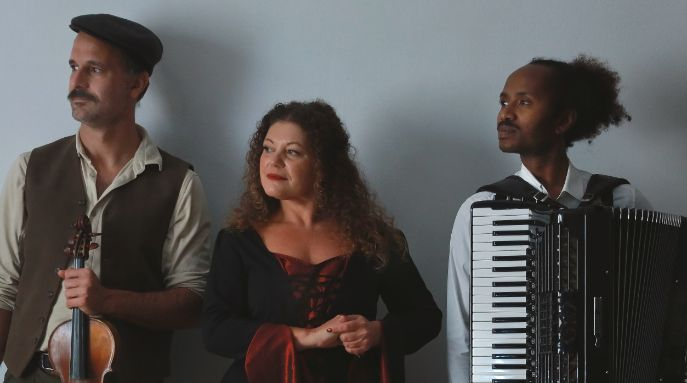
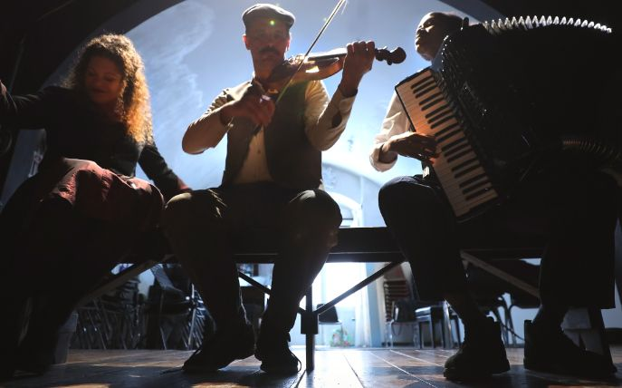
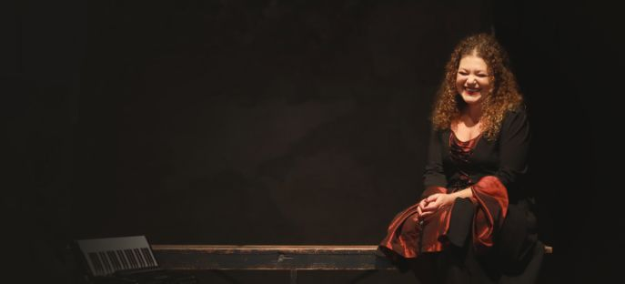
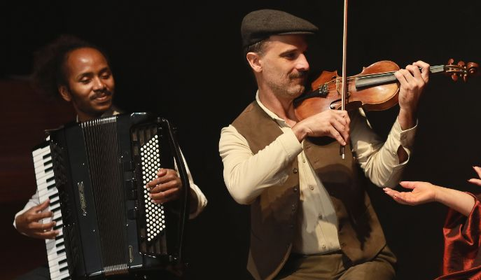
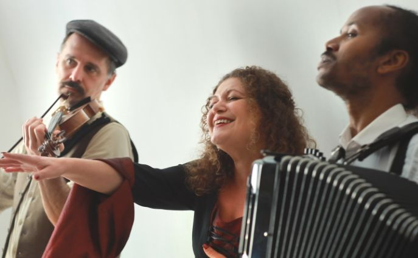

Le serenate sono una forma di musica "di strada" raffinata e popolare: pochi strumenti acustici, una voce protagonista e l'arte di fermarsi davanti a una casa, un balcone, un tavolo per cantare una dedica.
Nascono nei vicoli e nelle piazze del Sud e diventano linguaggio universale dell'amore: una canzone al posto di un discorso, una melodia al posto di un biglietto.
Nel passato hanno avuto un valore sociale fortissimo. Servivano per dichiararsi, chiedere perdono, celebrare un fidanzamento, accompagnare un passaggio importante nella vita di una comunità.
In un'epoca in cui le parole "in pubblico" erano misurate e i sentimenti spesso restavano inespressi, la serenata dava voce a ciò che non si poteva dire, portando poesia nella quotidianità e trasformando una strada qualunque in una scena teatrale.
Serenades are a refined yet popular form of "street" music: a few acoustic instruments, a leading voice, and the art of stopping in front of a house, a balcony, or a table to sing a dedication.
Born in the alleys and squares of Southern Italy, they became a universal language of love: a song instead of a speech, a melody instead of a written note.
In the past, they had a very strong social value. They were used to declare love, ask forgiveness, celebrate an engagement, or mark an important transition in the life of a community.
In an era when words spoken "in public" were measured and feelings often remained unexpressed, the serenade gave voice to what could not be said. It brought poetry into everyday life, transforming any ordinary street into a theatrical stage.


Il progetto nasce dalle serenate napoletane, dette anche "di posteggia", molte delle quali composte tra fine Ottocento e primi Novecento.
La formula acustica permette un ascolto ravvicinato e coinvolgente, ideale per teatri, rassegne e spazi non convenzionali, dove la narrazione musicale alterna intensità, leggerezza e partecipazione del pubblico.
La musica prende vita in una formula essenziale: la voce intensa e calda di Irene Lungo si intreccia con il violino di Marco Ghezzo e la fisarmonica di Bruno Galeone. Una parte del repertorio si ispira alla tradizione musicale rom e il progetto studia ulteriori contaminazioni in base al contesto, allo spazio e alla linea curatoriale mantenendo una forte identità artistica.
The project originates from Neapolitan serenades, also known as "posteggia" songs, many of which were composed between the late nineteenth and early twentieth centuries. The acoustic format allows for an intimate and immersive listening experience, ideal for theatres, festivals, and unconventional spaces, where musical storytelling alternates intensity, lightness, and audience participation.
The music comes to life in an essential and engaging form: the intense and warm voice of Irene Lungo intertwines with Marco Ghezzo's violin and Bruno Galeone's accordion.
Guarda il video
Watch the video
La formazione è modulabile e può includere altri musicisti in base alle esigenze di produzione.
L'evento può prevedere la presenza di una voce narrante, interpretata da Giuseppe Semeraro, per alternare alla musica delicati momenti di poesie d'amore.
Part of the repertoire draws inspiration from Romani musical tradition, and the project explores further cross-cultural influences depending on the context, the venue, and the curatorial line, while maintaining a strong artistic identity.
The ensemble is flexible and may include additional musicians according to production needs.
The event may also feature a narrator, performed by Giuseppe Semeraro, alternating the music with delicate moments of love poetry.


Fra i brani del grande repertorio napoletano, antiche canzoni d'amore con alcune "perle" entrate nel cuore di tutti nel dopoguerra.
Sono serenate e classici senza tempo, da I' te vurria vasà (1900) a Nun t'affaccià! (1908), da Dicitencello vuje (1930) a Malafemmena (1951) e Indifferentemente (1963).
Il live diventa un percorso teatrale: ogni brano è un quadro, una dedica, un cambio di luce che passa dall'intimità della serenata a momenti più aperti e partecipati, fino a un finale brillante, dove il pubblico viene accompagnato naturalmente verso una dimensione più festosa.
Guarda anche


Among the great Neapolitan repertoire, timeless love songs alongside a few "gems" that captured everyone's hearts in the post-war years.
These are serenades and timeless classics, from I' te vurria vasà (1900) to Nun t'affaccià! (1908), from Dicitencello vuje (1930) to Malafemmena (1951) and Indifferentemente (1963).
The live performance becomes a theatrical journey: each song is a tableau, a dedication, a change of light. It moves from the intimacy of the serenade to more open and engaging moments, culminating in a brilliant finale where the audience is naturally led into a more festive dimension.
See also

| Durata | 1:30' |
| Formazione | Irene Lungo (voce) Marco Ghezzo (violino) Bruno Galeone (Fisa) ampliabile |
| Repertorio | nucleo napoletano / aperture ad altre tradizioni popolari / sezione balkan |
altramarea.produzioni@gmail.com
mob. +39 347 8157272 Marinella Mazzotta
mob. +39 327 7372824 Raffaella Romano
| Duration | 1:30' |
| Line-up | Irene Lungo (vocals) Marco Ghezzo (violin) Bruno Galeone (accordion) |
| Repertoire | Neapolitan core / openings to other folk traditions / Balkan section |
| Production | AltraMarea |
mob. +39 347 8157272 Marinella Mazzotta
mob. +39 327 7372824 Raffaella Romano